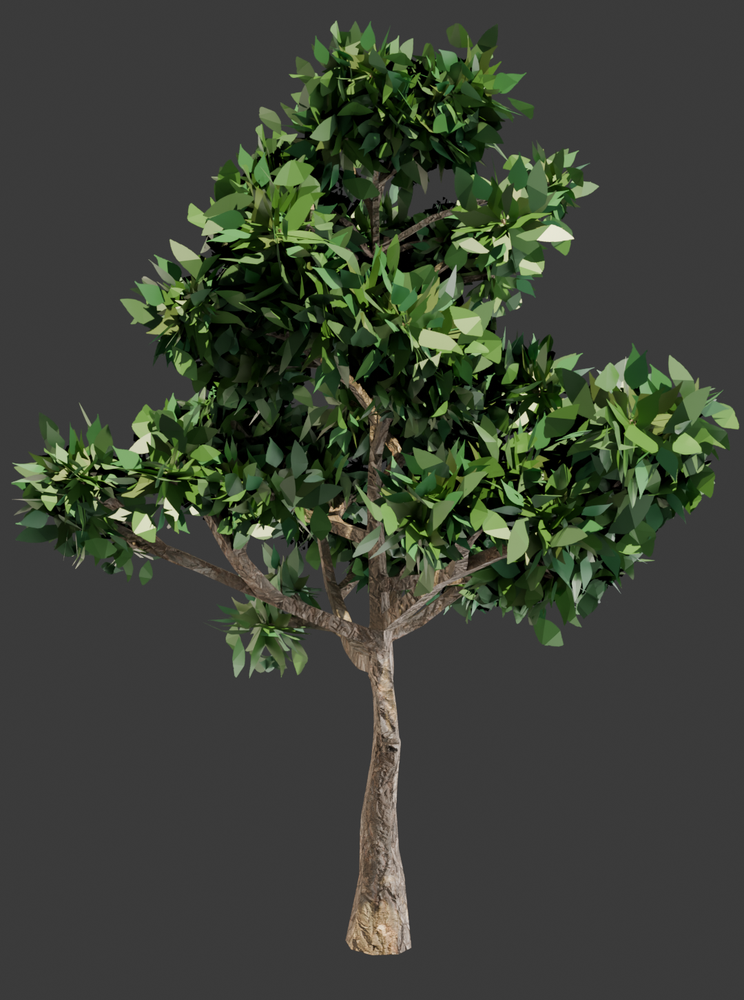
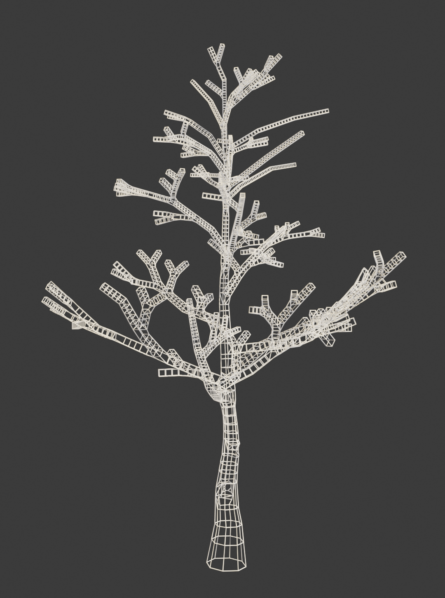

Game-Ready Assets
I can create various props, environment elements and stylized or realistic nature assets from scratch
My skillset, passions and goals.
I am an indie game developer and 3D artist crafting assets tailored specifically for game engines like Godot and Roblox.
With around 4 months of experience in Blender, I focus on balancing visual detail with optimized performance and taking the smallest details into account.
Instead of chasing overly complex, high-poly renders that tank frame rates, my goal is to build clean, functional props and stylized-realistic nature assets that drop seamlessly into active game scenes.
I build because I love making games, and I am continuously expanding my skillset one asset at a time.
How I can help create your next magnum opus
I can create various props, environment elements and stylized or realistic nature assets from scratch
Retopology and asset clean-up to ensure that the asset doesn't have excessive geometry that might lead to more lag
Setting up clean pivot points, proper bounding boxes, and optimized UV maps so assets drop instantly into scenes without scale or orientation issues.
A collection of my projects I made in Blender.


